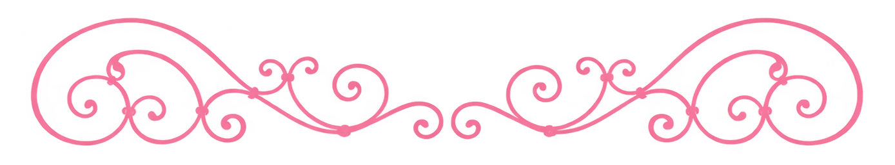

per aspera ad astra ⋆⭒˚.⋆
About Me
Sofia is a multimedia artist currently pursuing her BFA in Digital Media Arts at San Jose State University.
She's constantly working to improve her creative practice, inspired from a young age by the art of storytelling;
she moves through her practice as she does with life, "with an open heart". Sofia works with software like the
Adobe Creative Cloud, including Illustrator, Photoshop, After Effects, Lightroom, and Premiere Pro; she illustrates
and designs digitally with a number of these software programs as well as Procreate. She has a soft background in
3D design software like Maya and Blender. In her professional and personal practice, she follows the words of
Professor Keating: “No matter what anybody tells you, words and ideas can change the world.”
Thank you so much for stopping by!

My Work

Study on Whimsy
A digital expressionist study exploring the boundaries of whimsy and reality. Image sourced from personal collection and edited on Adobe Photoshop.

Model Photography
Photography practice with focus on three models.

Lightbox
Lightbox initially created from sketch and transfered to Adobe Illustrator. Printed using laser cutting and put together into final lightbox with LED lights.
Study on Whimsy
A digital expressionist study exploring the boundaries of whimsy and reality. Image sourced from personal collection and edited on Adobe Photoshop.
Model Photography
Photography practice with focus on three models.
Lightbox
Lightbox initially created from sketch and transfered to Adobe Illustrator. Printed using laser cutting and put together into final lightbox with LED lights.
Study on Whimsy
A digital expressionist study exploring the boundaries of whimsy and reality. Image sourced from personal collection and edited on Adobe Photoshop.
Model Photography
Photography practice with focus on three models.
Contact Me
Email: sofia.arellano@sjsu.edu